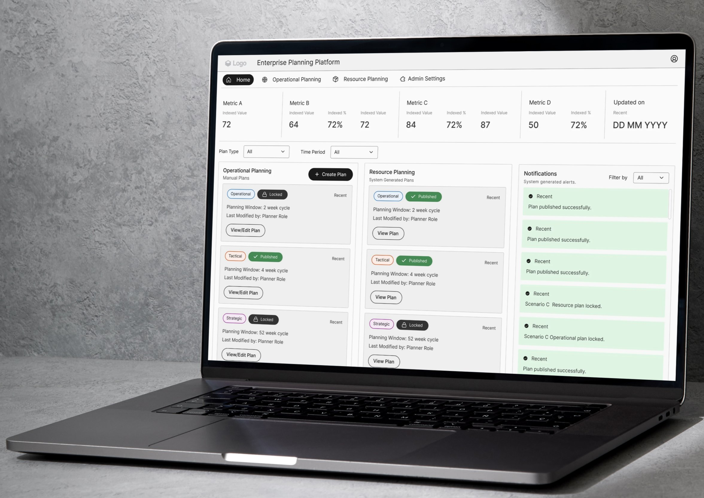
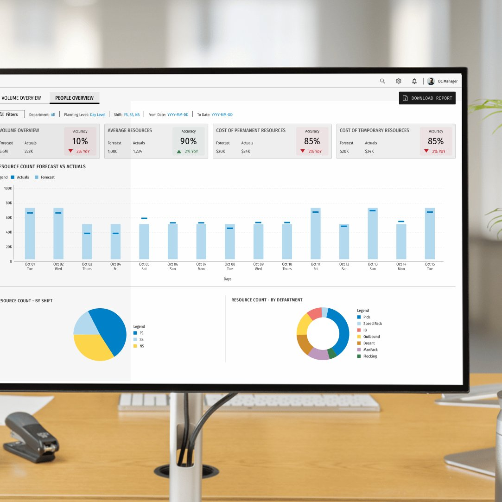

Hi, I'm
I design enterprise products where complexity is the problem — and clarity is the outcome. 2.5 years building B2B platforms for Fortune 500 companies — across workforce planning, supply chain, financial analytics, ad sales & campaign planning, and executive decision dashboards.
I'm a Product Designer specialising in enterprise B2B products built for Fortune 500 clients. Over 2.5 years at MathCo, I've worked across 8 engagements spanning workforce planning, supply chain planning, financial analytics, ad sales & campaign financial planning, business management to value creation, and KPI monitoring for executive teams — delivering work that contributed to a 5% YoY revenue lift and cut onboarding time from months to one week across 40+ global sites.
My strength is not purely visual execution. I spend as much time understanding a system as I do designing one — mapping workflows, identifying where complexity is necessary versus accidental, and building products that feel obvious to use. In enterprise design, that's the hardest thing to get right.
I hold a Bachelor's of Design in Interaction Design from PES University (9.63 CGPA), and have co-authored two peer-reviewed papers in Springer Nature LNNS at SmartCom 2024 — with a focus on experience design.
Redesigned a fragmented, role-blind planning system for a global beverage manufacturer into a unified S&OP and S&OE platform — consolidating demand, supply, resource, and inventory planning under a single role-aware interface.

Architected end-to-end UX for a global workforce planning platform across 66 distribution centers — cutting DC onboarding time from months to one week, serving 210 users across 3 distinct personas and 7 departments.

Translated persona-driven KPI frameworks into a unified analytics platform replacing siloed legacy reporting — for a staffing firm post-merger integration, synthesising 5 persona interviews into 3 distinct user domains with a clear KPI hierarchy.
A foundation built on empathy, curiosity, and the conviction that good design starts with understanding people — not just systems.
My strongest work has been in enterprise B2B — but what drives me isn't the domain. It's the nature of the problem. I'm drawn to products where the user's work is genuinely complex — where good design has measurable consequences.
That kind of problem exists in B2B consulting, in SaaS product companies, in B2C products with real operational depth, and anywhere that decisions have weight. What matters is the quality of thinking expected and the stake that design has in the outcome.
Open to full-time roles and consulting engagements. If the problem is complex and design matters, I'd like to hear about it.